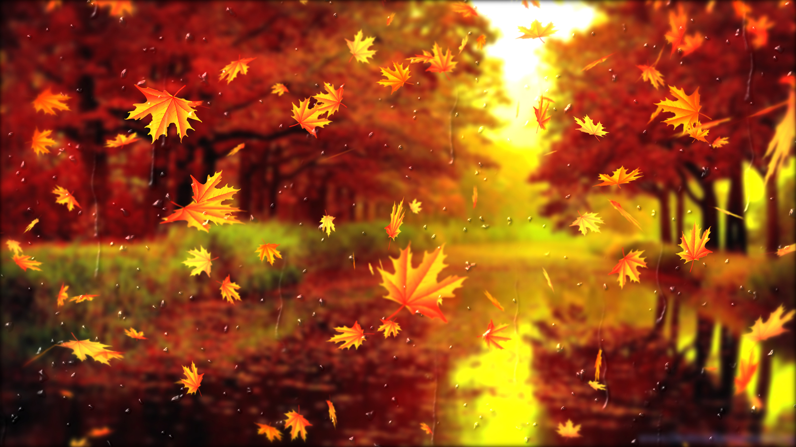

в ботаніці, це рослини, головним чином дерева або кущі, чиє листя обпадає в певну пору року. У одних випадках це пов'язано з низькими температурами в зимовий період на територіях з помірним або арктичним кліматом; у інших обпадання відбувається в посушливий сезон в регіонах з сезонним регулюванням опадів. Протилежну листопадним рослинам групу складають так звані вічнозелені рослини, чиє листя не обпадає. Окрім цього, є рослини з проміжним циклом — їх називають напівлистопадними.
Багато листопадних рослин квітнуть в період, коли листя на них відсутнє — це збільшує їх продуктивність при запиленні. Відсутність листя спрощує процес запилення у рослин, що обпилюються за допомогою вітру, і покращує їх видимість для комах-обпилювачів. Проте ця стратегія ризикована, оскільки люті морози або посуха можуть погубити насіння.
Скидаючи листя, дерева і чагарники зменшують свою потребу у волозі — в морозну погоду вода замерзає і стає недоступною. За відсутності листя збільшується продувність рослин, що зберігає їх стовбури і стебла від пошкоджень, викликаних сніжними штормами.
Ліси листопадних дерев формують характерний біом — листопадні ліси.
